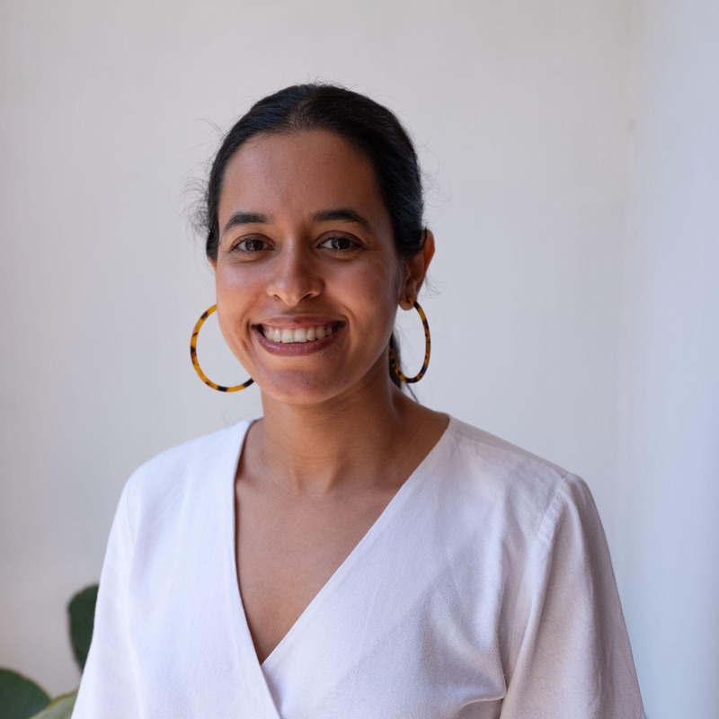
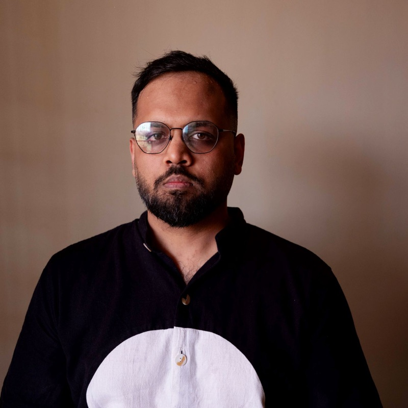
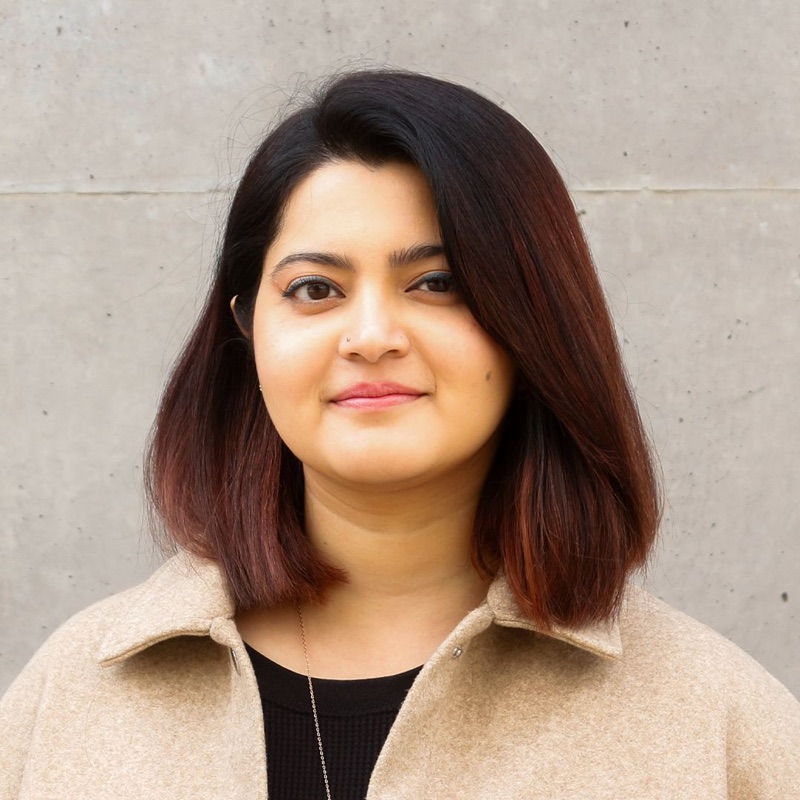
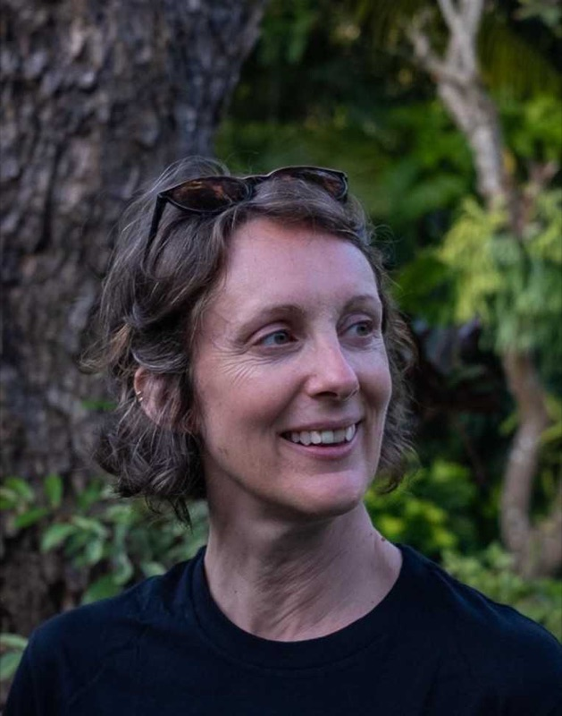
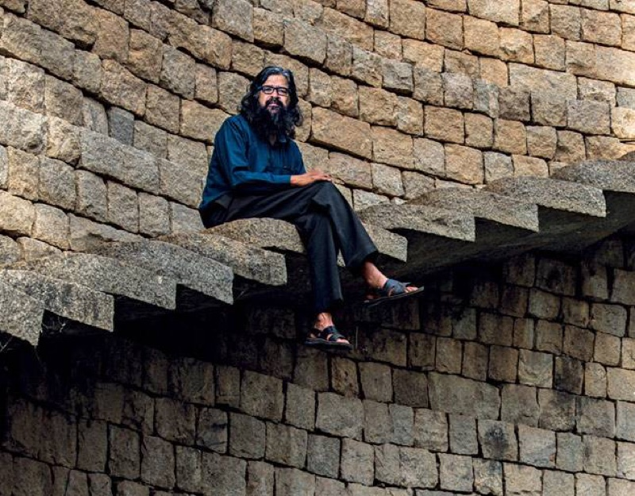
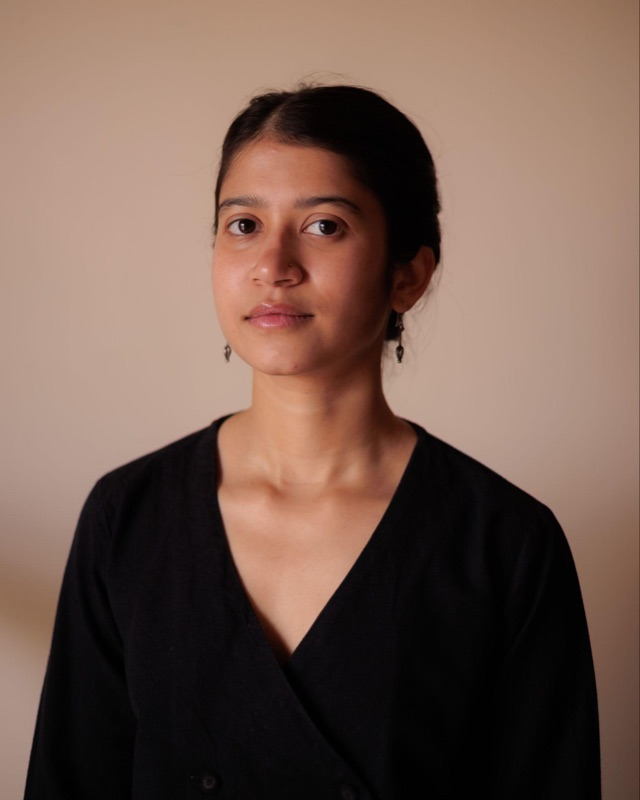

scroll to travel · drag to orbit · click a point
The set of conditions that allow collective imagination to arise, stay, and return.
A good workshop can get a room imagining its future in one morning. The hard part is making that imagination stay — it gets written up, summarised, carried away, and the people who did the imagining are left to start from scratch next time. This studio is about building what's missing: the rhythms, spaces, rituals and archives that let imagination stick around and grow where it was made.
Lagori Collective is an experimental research and design studio working to keep multiple futures possible. · The record: submissions.csv · students.csv
Every submission, in the order it arrived — nothing curated away.






One row per student — click a name to open everything they have filed.
The full register with dossiers lives in the ledger →